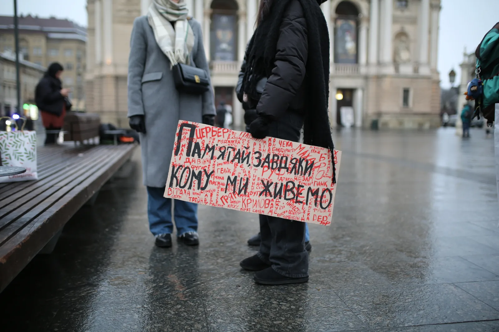
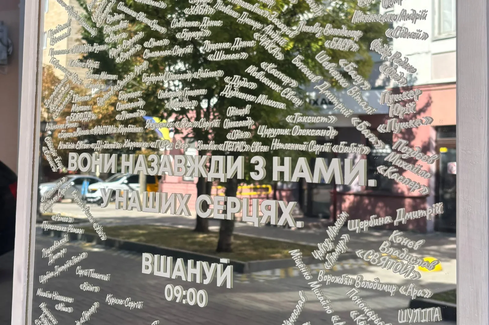
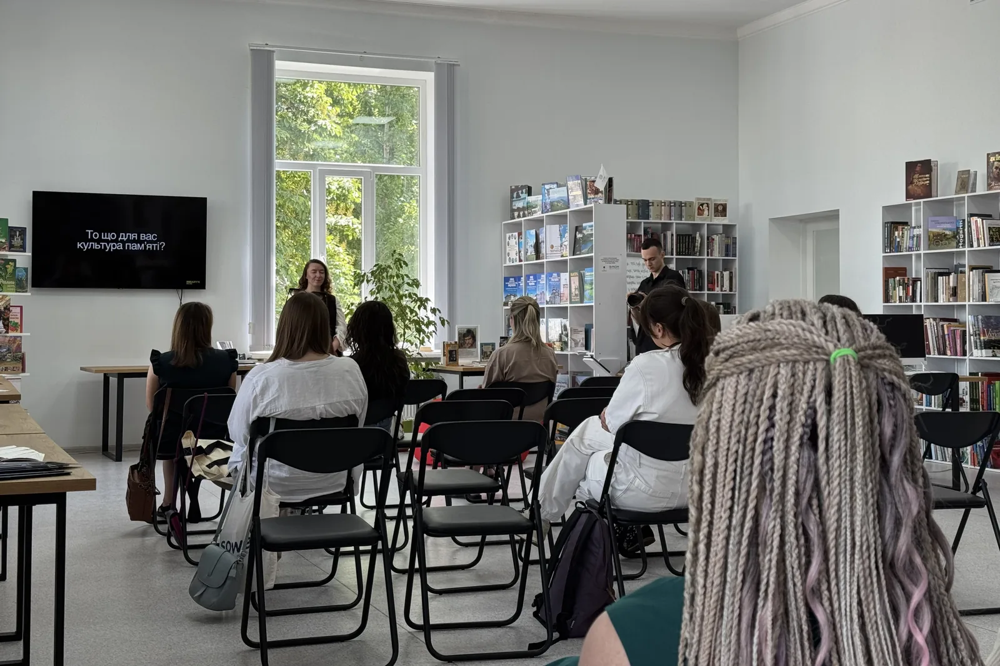

Суспільство
Говоримо про складні й важливі теми, повʼязані з памʼяттю про війну: як прощатися, як говорити про загиблих, як уникати знеособлення втрат. Співтворимо нові практики памʼяті.

Якщо у вас виникає питання – ми маємо або ж знайдемо на нього відповідь.
Порушуємо теми, про які часто складно говорити: якими мають бути публічні прощання із загиблими військовими і чи мають вони бути взагалі, хто і як має вшановувати загиблих, як створювати меморіали, що не травмують і не відштовхують, чи є у нас такі позитивні приклади? Через публічні комунікації, лекції, розмови чи коментарі в Threads шукаємо мову, якою суспільство може говорити про памʼять.
Проєкти в межах діяльності
Усі проєкти-

ЧекаFest
Благодійний освітньо-музичний фестиваль памʼяті Ірини Цибух. Створений родиною та друзями Іри ЧЕКИ. Щорічний — у зручних датах біля 1 червня, дня її народження.
-

Поміж нас
Загальноукраїнський проєкт ГО «Вшануй»: вшанування памʼяті загиблих Захисників і Захисниць та підтримка родин полонених і зниклих безвісти. Тактовне нагадування про ціну умовно спокійного життя.
-

Дзеркало памʼяті
Проєкт координаторок «Вшануй» у Полтаві. Місце, де кожен може залишити імʼя людини, яку вбила росія, — щоб вона була видимою у просторі міста.
-

Вінкування
29 серпня 2026-го, у День памʼяті загиблих, ми відновлювали традицію вінкування. Родини та друзі плели вінки з живих квітів під розповіді про найщасливіші моменти полеглих.
Інші напрями
Усі напрями-

Освіта
Досліджуємо, як діти, підлітки та вчителі сприймають тему памʼяті й якою хочуть бачити розмову про неї в школі. Розробляємо практичні матеріали для освітян, проводимо лекції та зустрічі, створюємо документи-опори для роботи з темою памʼяті.
-

Військо
Досліджуємо військові ритуали й традиції та шукаємо способи зберігати їхню тяглість у сучасному українському війську. Працюємо над створенням церемоній прощання з військовослужбовцями, які можуть бути адаптовані та впроваджені в громадах по всій Україні.